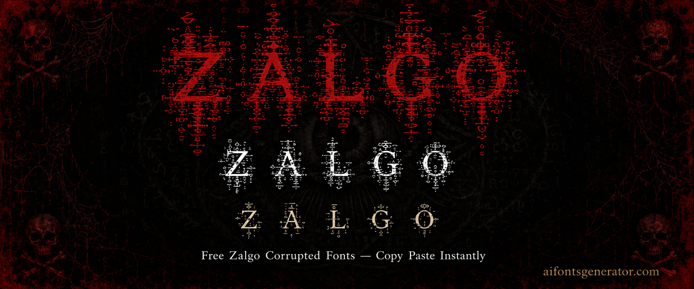

Zalgo Text Generator — Free Unicode Fonts
Extreme corrupted text for Discord & gaming. Type your text above, scroll through the styles, and click to copy. No download needed.
What Is a Zalgo Text Generator?
Zalgo text is a specific type of distorted Unicode text that stacks combining diacritical marks so heavily on each character that the text visually overflows its normal line boundaries. Letters appear to bleed upward and downward, consuming surrounding white space and sometimes engulfing the lines above and below. The name comes from an internet horror meme. The effect is used in horror-themed Discord servers, creepypasta communities, and social profiles where an unsettling aesthetic is the point. The zalgo text generator outputs multiple intensity levels, from light mark stacking to full line-overflow chaos. The underlying characters are plain Unicode, so zalgo text pastes into Discord, Instagram, and other fields without any installation.
How to Use This Zalgo Text Generator
Type your text into the input field and the zalgo text generator outputs several intensity levels immediately. Low intensity adds a small number of combining marks for a subtle distorted look. High intensity stacks marks aggressively until the text overflows surrounding lines. Choose the level that fits your use case and click copy. Paste into Discord, Instagram, or any other platform. Keep in mind that some platforms have character limits, and high-intensity zalgo significantly increases character count.
Zalgo Text Generator for Instagram
Zalgo text in Instagram bios reads as intentional horror or glitch aesthetic when the intensity is kept moderate. High-intensity zalgo can be unpredictable in Instagram's bio field display depending on the viewer's device. The name field is less suited for zalgo because the overflow effect can make the display name hard to read. The bio, where longer text gives the zalgo marks more room to breathe, is the better location for this style on Instagram.
Zalgo Text Generator for Discord
Discord is the most natural home for zalgo text. Horror and SCP-themed servers, creepypasta communities, and aesthetic dark servers use zalgo usernames and bios as part of their visual identity. Discord renders combining marks and zalgo overflow reliably across most client versions. High-intensity zalgo in a Discord nickname is visible and distinctive in member lists. Status and bio fields handle zalgo well at all intensity levels.
Zalgo Text Generator for Gaming
Zalgo text in gaming is most popular in horror game communities and servers, rather than in actual in-game names. Many games restrict the Unicode ranges used for combining marks, which limits zalgo display in name fields. Free Fire and BGMI may truncate or strip zalgo characters entirely. For gaming use, test a zalgo paste in the game's name field before confirming. Discord gaming server profiles and usernames are more reliable locations for zalgo text than in-game name fields.
Platform Compatibility Guide
Discord is the most compatible platform for zalgo text at all intensity levels. Instagram bio fields support light to medium intensity. High-intensity zalgo on Instagram can display inconsistently depending on device and app version. WhatsApp renders zalgo in messages. TikTok display names support light zalgo. Most mobile games restrict combining mark Unicode, making zalgo unreliable in game name fields. Twitter renders zalgo in tweets and bios. For maximum reliability, keep intensity at medium or below when targeting platforms other than Discord.
Why Use Unicode Zalgo Text Generator?
Zalgo text exploits Unicode combining characters, which are diacritical marks that attach to the character before them. Combining marks were added to Unicode to handle accent notation in dozens of languages. There is no technical limit in Unicode on how many combining marks can be stacked on a single base character. Zalgo takes advantage of this by stacking far more marks than any language needs, creating visual overflow. The characters are completely standard and display on any Unicode-supporting device.
Frequently Asked Questions
What is zalgo text and where does it come from?
Zalgo text stacks Unicode combining marks on characters until the text visually overflows its line, creating a corrupted or horror-aesthetic appearance. The name comes from an internet horror meme that used this style of text. It is technically just standard Unicode used in a way its designers did not intend. The effect became popular in horror communities on Discord and Reddit.
Is zalgo text safe to use on Discord and other platforms?
Yes. Zalgo text is plain Unicode and does not contain any code or scripts. It cannot cause harm or break apps. High-intensity zalgo in Discord can be visually disruptive in chat because it pushes surrounding messages apart. Some Discord servers have rules against extreme zalgo in chat for readability reasons. In bios and name fields, zalgo is safe and widely used.
Does zalgo text work in Discord names and bios?
Yes, Discord handles zalgo text well. Combining mark characters render correctly in Discord nicknames, display names, and bio fields across desktop and mobile clients. High-intensity zalgo increases character count significantly, so very heavy zalgo may hit Discord's character limits in name fields. Medium intensity is usually the best balance between the visual effect and staying within limits.
More Font Style Generators
Looking for something different? Try these: